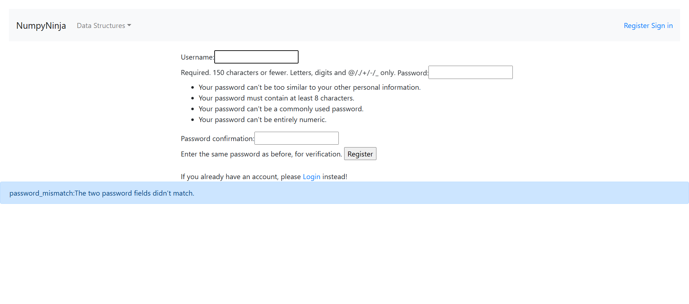

-
Graph Module
12:09:44 AM / 00:01:17:898 Pass
Graph Module
02.25.2025 12:09:44 AM 02.25.2025 12:11:01 AM 00:01:17:898 · #test-id=1PassVerify that the user is able to click on Get Started button under Graph sectionGiven User is in the ds-algo launch pageWhen User clicks the Get Started buttonThen login with "Login_Valid" and 1Given User is on the Home page of dsalgo portal for testing Graph moduleWhen User clicks on Get Started button under Graph sectionThen User is navigated to Graph home pagePassVerify that Graph link is enabledGiven User is in the ds-algo launch pageWhen User clicks the Get Started buttonThen login with "Login_Valid" and 1Given User is on Graph home pageWhen User checks if Graph link is enabledThen Graph link should be enabledPassVerify that Graph Representations link is enabledGiven User is in the ds-algo launch pageWhen User clicks the Get Started buttonThen login with "Login_Valid" and 1Given User is on Graph home pageWhen User checks if Graph Representations link is enabledThen Graph Representations link should be enabledPassVerify that the user is able to navigate to Graph pageGiven User is in the ds-algo launch pageWhen User clicks the Get Started buttonThen login with "Login_Valid" and 1Given User is on Graph home pageWhen User clicks on Graph linkThen User is navigated to Graph pagePassVerify that the user is able to click on Try here>>> buttonGiven User is in the ds-algo launch pageWhen User clicks the Get Started buttonThen login with "Login_Valid" and 1Given User is on Graph pageWhen User clicks on Try here>>> button of Graph pageThen User is navigated to tryEditor page of Graph pagePassVerify that the user is able to see output for valid, invalid and incorrect syntax Python code entered for the Graph pagePassVerify that the user is able to see output for valid, invalid and incorrect syntax Python code entered for the Graph pageGiven User is in the ds-algo launch pageWhen User clicks the Get Started buttonThen login with "Login_Valid" and 1Given The user is in the Try Editor page for the Graph pageWhen User enters valid, invalid and incorrect syntax code from excel sheet 'TryEditor' and 1 and clicks on Run button for the Graph pageThen The user should be able to get an output in the Try Editor screen for the Graph pagePassVerify that the user is able to see output for valid, invalid and incorrect syntax Python code entered for the Graph pageGiven User is in the ds-algo launch pageWhen User clicks the Get Started buttonThen login with "Login_Valid" and 1Given The user is in the Try Editor page for the Graph pageWhen User enters valid, invalid and incorrect syntax code from excel sheet 'TryEditor' and 2 and clicks on Run button for the Graph pageThen The user should be able to get an output in the Try Editor screen for the Graph pagePassVerify that the user is able to see output for valid, invalid and incorrect syntax Python code entered for the Graph pageGiven User is in the ds-algo launch pageWhen User clicks the Get Started buttonThen login with "Login_Valid" and 1Given The user is in the Try Editor page for the Graph pageWhen User enters valid, invalid and incorrect syntax code from excel sheet 'TryEditor' and 3 and clicks on Run button for the Graph pageThen The user should be able to get an output in the Try Editor screen for the Graph pagePassVerify that the user is able to navigate to Graph page after clicking <- in the Try Editor windowGiven User is in the ds-algo launch pageWhen User clicks the Get Started buttonThen login with "Login_Valid" and 1Given The user is in the Try Editor page of Graph pageWhen The user clicks <- in the Try Editor screen of Graph pageThen The user should be able to navigate to Graph pagePassVerify that the user is able to navigate to Graph Representations pageGiven User is in the ds-algo launch pageWhen User clicks the Get Started buttonThen login with "Login_Valid" and 1Given User is on Graph pageWhen User clicks on Graph Representations linkThen User is navigated to Graph Representations pagePassVerify that the user is able to click on Try here>>> buttonGiven User is in the ds-algo launch pageWhen User clicks the Get Started buttonThen login with "Login_Valid" and 1Given User is on Graph Representations pageWhen User clicks on Try here>>> button of Graph Representations pageThen User is navigated to tryEditor page of Graph Representations pagePassVerify that the user is able to see output for valid, invalid and incorrect syntax Python code entered for the Graph Representations pagePassVerify that the user is able to see output for valid, invalid and incorrect syntax Python code entered for the Graph Representations pageGiven User is in the ds-algo launch pageWhen User clicks the Get Started buttonThen login with "Login_Valid" and 1Given The user is in the Try Editor page for the Graph Representations pageWhen User enters valid, invalid and incorrect syntax code from excel sheet 'TryEditor' and 1 and clicks on Run button for the Graph Representations pageThen The user should be able to get an output in the Try Editor screen for the Graph Representations pagePassVerify that the user is able to see output for valid, invalid and incorrect syntax Python code entered for the Graph Representations pageGiven User is in the ds-algo launch pageWhen User clicks the Get Started buttonThen login with "Login_Valid" and 1Given The user is in the Try Editor page for the Graph Representations pageWhen User enters valid, invalid and incorrect syntax code from excel sheet 'TryEditor' and 2 and clicks on Run button for the Graph Representations pageThen The user should be able to get an output in the Try Editor screen for the Graph Representations pagePassVerify that the user is able to see output for valid, invalid and incorrect syntax Python code entered for the Graph Representations pageGiven User is in the ds-algo launch pageWhen User clicks the Get Started buttonThen login with "Login_Valid" and 1Given The user is in the Try Editor page for the Graph Representations pageWhen User enters valid, invalid and incorrect syntax code from excel sheet 'TryEditor' and 3 and clicks on Run button for the Graph Representations pageThen The user should be able to get an output in the Try Editor screen for the Graph Representations pagePassVerify that the user is able to navigate to Graph Representations page after clicking <- in the Try Editor windowGiven User is in the ds-algo launch pageWhen User clicks the Get Started buttonThen login with "Login_Valid" and 1Given The user is in the Try Editor page of Graph Representations pageWhen The user clicks <- in the Try Editor screen of Graph Representations pageThen The user should be able to navigate to Graph Representations pagePassVerify that the user is redirected to Practice Questions page of Graph moduleGiven User is in the ds-algo launch pageWhen User clicks the Get Started buttonThen login with "Login_Valid" and 1Given User is on Graph Representations pageWhen User clicks on Practice Questions link of Graph moduleThen User is navigated to Practice Questions page of Graph module -
Home Page
12:11:01 AM / 00:00:25:469 Pass
Home Page
02.25.2025 12:11:01 AM 02.25.2025 12:11:27 AM 00:00:25:469 · #test-id=244PassVerify that the user is able to navigate to the home pageGiven User is in the ds-algo launch pageWhen User clicks the Get Started buttonThen User should be able to navigate to the home pagePassVerify that the user can view Data Structures dropdown options without signing inGiven User is in the ds-algo launch pageWhen User clicks the Get Started buttonWhen User clicks on the Data Structures dropdownThen User should be able to see the options: Arrays, Linked List, Stack, Queue, Tree, Graph in the dropdown menuPassVerify warning message when selecting Arrays without signing inGiven User is in the ds-algo launch pageWhen User clicks the Get Started buttonWhen User selects Arrays from the dropdown without signing inThen User should be able to see a warning message You are not logged inPassVerify warning message when selecting Linked List without signing inGiven User is in the ds-algo launch pageWhen User clicks the Get Started buttonWhen User selects Linked List from the dropdown without signing inThen User should be able to see a warning message You are not logged inPassVerify warning message when selecting Stack without signing inGiven User is in the ds-algo launch pageWhen User clicks the Get Started buttonWhen User selects Stack from the dropdown without signing inThen User should be able to see a warning message You are not logged inPassVerify warning message when selecting Queue without signing inGiven User is in the ds-algo launch pageWhen User clicks the Get Started buttonWhen User selects Queue from the dropdown without signing inThen User should be able to see a warning message You are not logged inPassVerify warning message when selecting Tree without signing inGiven User is in the ds-algo launch pageWhen User clicks the Get Started buttonWhen User selects Tree from the dropdown without signing inThen User should be able to see a warning message You are not logged inPassVerify warning message when selecting Graph without signing inGiven User is in the ds-algo launch pageWhen User clicks the Get Started buttonWhen User selects Graph from the dropdown without signing inThen User should be able to see a warning message You are not logged inPassVerify that the user stays on the same page when clicking elsewhereGiven User is in the ds-algo launch pageWhen User clicks the Get Started buttonWhen User clicks on the launch page other than the Get StartedThen User should stay in the same launch page -
Linked List Functionality
12:11:27 AM / 00:03:45:509 Pass
Linked List Functionality
02.25.2025 12:11:27 AM 02.25.2025 12:15:12 AM 00:03:45:509 · #test-id=342PassVerify that the user is able to click on Get Started button under Linked List sectionGiven User is in the ds-algo launch pageWhen User clicks the Get Started buttonThen login with "Login_Valid" and 1When User clicks on the Get Started button under Linked List sectionThen User is navigated to Linked List pagePassVerify that the Introduction link is enabled in the Linked List pageGiven User is in the ds-algo launch pageWhen User clicks the Get Started buttonThen login with "Login_Valid" and 1Given The user is in the Linked List page after Sign-InWhen The user checks whether the Introduction link is enabledThen The user should be able to see Introduction link enabled in the Linked List pagePassVerify that the Creating Linked List link is enabled in the Linked List pageGiven User is in the ds-algo launch pageWhen User clicks the Get Started buttonThen login with "Login_Valid" and 1Given The user is in the Linked List page after Sign-InWhen The user checks whether the Creating Linked List link is enabledThen The user should be able to see Creating Linked List link enabled in the Linked List pagePassVerify that the Types of Linked List link is enabled in the Linked List pageGiven User is in the ds-algo launch pageWhen User clicks the Get Started buttonThen login with "Login_Valid" and 1Given The user is in the Linked List page after Sign-InWhen The user checks whether the Types of Linked List link is enabledThen The user should be able to see Types of Linked List link enabled in the Linked List pagePassVerify that the Implement Linked List in Python link is enabled in the Linked List pageGiven User is in the ds-algo launch pageWhen User clicks the Get Started buttonThen login with "Login_Valid" and 1Given The user is in the Linked List page after Sign-InWhen The user checks whether the Implement Linked List in Python link is enabledThen The user should be able to see Implement Linked List in Python link enabled in the Linked List pagePassVerify that the Traversal link is enabled in the Linked List pageGiven User is in the ds-algo launch pageWhen User clicks the Get Started buttonThen login with "Login_Valid" and 1Given The user is in the Linked List page after Sign-InWhen The user checks whether the Traversal link is enabledThen The user should be able to see Traversal link enabled in the Linked List pagePassVerify that the Insertion link is enabled in the Linked List pageGiven User is in the ds-algo launch pageWhen User clicks the Get Started buttonThen login with "Login_Valid" and 1Given The user is in the Linked List page after Sign-InWhen The user checks whether the Insertion link is enabledThen The user should be able to see Insertion link enabled in the Linked List pagePassVerify that the Deletion link is enabled in the Linked List pageGiven User is in the ds-algo launch pageWhen User clicks the Get Started buttonThen login with "Login_Valid" and 1Given The user is in the Linked List page after Sign-InWhen The user checks whether the Deletion link is enabledThen The user should be able to see Deletion link enabled in the Linked List pagePassVerify that the user is able to navigate to Introduction pageGiven User is in the ds-algo launch pageWhen User clicks the Get Started buttonThen login with "Login_Valid" and 1Given The user is in the Linked List page after Sign-InWhen The user clicks Introduction link in the Linked List pageThen The user should be able to navigate to Introduction pagePassVerify that the user is able to navigate to Try Here >>> page for Introduction pageGiven User is in the ds-algo launch pageWhen User clicks the Get Started buttonThen login with "Login_Valid" and 1Given The user is in the Introduction pageWhen The user clicks Try Here >>> button in the Introduction pageThen The user should be able to navigate to Try Editor page with Run button to testPassVerify that the user is able to see output for valid, invalid and incorrect syntax Python code is entered for the Introduction pagePassVerify that the user is able to see output for valid, invalid and incorrect syntax Python code is entered for the Introduction pageGiven User is in the ds-algo launch pageWhen User clicks the Get Started buttonThen login with "Login_Valid" and 1Given The user is in the Try Editor page for the Introduction pageWhen User enters valid, invalid and incorrect syntax code from excel sheet 'TryEditor' and 1 and clicks on Run button for the Introduction pageThen The user should be able to get an output in the Try Editor screen for the Introduction pagePassVerify that the user is able to see output for valid, invalid and incorrect syntax Python code is entered for the Introduction pageGiven User is in the ds-algo launch pageWhen User clicks the Get Started buttonThen login with "Login_Valid" and 1Given The user is in the Try Editor page for the Introduction pageWhen User enters valid, invalid and incorrect syntax code from excel sheet 'TryEditor' and 2 and clicks on Run button for the Introduction pageThen The user should be able to get an output in the Try Editor screen for the Introduction pagePassVerify that the user is able to see output for valid, invalid and incorrect syntax Python code is entered for the Introduction pageGiven User is in the ds-algo launch pageWhen User clicks the Get Started buttonThen login with "Login_Valid" and 1Given The user is in the Try Editor page for the Introduction pageWhen User enters valid, invalid and incorrect syntax code from excel sheet 'TryEditor' and 3 and clicks on Run button for the Introduction pageThen The user should be able to get an output in the Try Editor screen for the Introduction pagePassVerify that the user is able to navigate to Introduction page after clicking <- in the Try Editor windowGiven User is in the ds-algo launch pageWhen User clicks the Get Started buttonThen login with "Login_Valid" and 1Given The user is in the Try Editor page for the Introduction pageWhen The user clicks <- in the Try Editor screen for the Linked List pageThen The user should be able to navigate to Introduction pagePassVerify that the user is able to navigate to Creating Linked List pageGiven User is in the ds-algo launch pageWhen User clicks the Get Started buttonThen login with "Login_Valid" and 1Given The user is in the Linked List page after Sign-InWhen The user clicks Creating Linked List link in the Linked List pageThen The user should be able to navigate to Creating Linked List pagePassVerify that the user is able to navigate to Try Here >>> page for Creating Linked List pageGiven User is in the ds-algo launch pageWhen User clicks the Get Started buttonThen login with "Login_Valid" and 1Given The user is in the Creating Linked List pageWhen The user clicks Try Here >>> button in the Creating Linked List pageThen The user should be able to navigate to Try Editor page with Run button to testPassVerify that the user is able to see output for valid, invalid and incorrect syntax Python code is entered for the Creating Linked List pagePassVerify that the user is able to see output for valid, invalid and incorrect syntax Python code is entered for the Creating Linked List pageGiven User is in the ds-algo launch pageWhen User clicks the Get Started buttonThen login with "Login_Valid" and 1Given The user is in the Try Editor page for the Creating Linked List pageWhen User enters valid, invalid and incorrect syntax code from excel sheet 'TryEditor' and 1 and clicks on Run button for the Creating Linked List pageThen The user should be able to get an output in the Try Editor screen for the Creating Linked List pagePassVerify that the user is able to see output for valid, invalid and incorrect syntax Python code is entered for the Creating Linked List pageGiven User is in the ds-algo launch pageWhen User clicks the Get Started buttonThen login with "Login_Valid" and 1Given The user is in the Try Editor page for the Creating Linked List pageWhen User enters valid, invalid and incorrect syntax code from excel sheet 'TryEditor' and 2 and clicks on Run button for the Creating Linked List pageThen The user should be able to get an output in the Try Editor screen for the Creating Linked List pagePassVerify that the user is able to see output for valid, invalid and incorrect syntax Python code is entered for the Creating Linked List pageGiven User is in the ds-algo launch pageWhen User clicks the Get Started buttonThen login with "Login_Valid" and 1Given The user is in the Try Editor page for the Creating Linked List pageWhen User enters valid, invalid and incorrect syntax code from excel sheet 'TryEditor' and 3 and clicks on Run button for the Creating Linked List pageThen The user should be able to get an output in the Try Editor screen for the Creating Linked List pagePassVerify that the user is able to navigate to Creating Linked List page after clicking <- in the Try Editor windowGiven User is in the ds-algo launch pageWhen User clicks the Get Started buttonThen login with "Login_Valid" and 1Given The user is in the Try Editor page for the Creating Linked List pageWhen The user clicks <- in the Try Editor screen for the Linked List pageThen The user should be able to navigate to Creating Linked List pagePassVerify that the user is able to navigate to Types of Linked List pageGiven User is in the ds-algo launch pageWhen User clicks the Get Started buttonThen login with "Login_Valid" and 1Given The user is in the Linked List page after Sign-InWhen The user clicks Types of Linked List link in the Linked List pageThen The user should be able to navigate to Types of Linked List pagePassVerify that the user is able to navigate to Try Here >>> page for Types of Linked List pageGiven User is in the ds-algo launch pageWhen User clicks the Get Started buttonThen login with "Login_Valid" and 1Given The user is in the Types of Linked List pageWhen The user clicks Try Here >>> button in the Types of Linked List pageThen The user should be able to navigate to Try Editor page with Run button to testPassVerify that the user is able to see output for valid, invalid and incorrect syntax Python code is entered for the Types of Linked List pagePassVerify that the user is able to see output for valid, invalid and incorrect syntax Python code is entered for the Types of Linked List pageGiven User is in the ds-algo launch pageWhen User clicks the Get Started buttonThen login with "Login_Valid" and 1Given The user is in the Try Editor page for the Types of Linked List pageWhen User enters valid, invalid and incorrect syntax code from excel sheet 'TryEditor' and 1 and clicks on Run button for the Types of Linked List pageThen The user should be able to get an output in the Try Editor screen for the Types of Linked List pagePassVerify that the user is able to see output for valid, invalid and incorrect syntax Python code is entered for the Types of Linked List pageGiven User is in the ds-algo launch pageWhen User clicks the Get Started buttonThen login with "Login_Valid" and 1Given The user is in the Try Editor page for the Types of Linked List pageWhen User enters valid, invalid and incorrect syntax code from excel sheet 'TryEditor' and 2 and clicks on Run button for the Types of Linked List pageThen The user should be able to get an output in the Try Editor screen for the Types of Linked List pagePassVerify that the user is able to see output for valid, invalid and incorrect syntax Python code is entered for the Types of Linked List pageGiven User is in the ds-algo launch pageWhen User clicks the Get Started buttonThen login with "Login_Valid" and 1Given The user is in the Try Editor page for the Types of Linked List pageWhen User enters valid, invalid and incorrect syntax code from excel sheet 'TryEditor' and 3 and clicks on Run button for the Types of Linked List pageThen The user should be able to get an output in the Try Editor screen for the Types of Linked List pagePassVerify that the user is able to navigate to Types of Linked List page after clicking <- in the Try Editor windowGiven User is in the ds-algo launch pageWhen User clicks the Get Started buttonThen login with "Login_Valid" and 1Given The user is in the Try Editor page for the Types of Linked List pageWhen The user clicks <- in the Try Editor screen for the Linked List pageThen The user should be able to navigate to Types of Linked List pagePassVerify that the user is able to navigate to Implement Linked List in Python pageGiven User is in the ds-algo launch pageWhen User clicks the Get Started buttonThen login with "Login_Valid" and 1Given The user is in the Linked List page after Sign-InWhen The user clicks Implement Linked List in Python link in the Linked List pageThen The user should be able to navigate to Implement Linked List in Python pagePassVerify that the user is able to navigate to Try Here >>> page for Implement Linked List in Python pageGiven User is in the ds-algo launch pageWhen User clicks the Get Started buttonThen login with "Login_Valid" and 1Given The user is in the Implement Linked List in Python pageWhen The user clicks Try Here >>> button in the Implement Linked List in Python pageThen The user should be able to navigate to Try Editor page with Run button to testPassVerify that the user is able to see output for valid, invalid and incorrect syntax Python code is entered for the Implement Linked List in Python pagePassVerify that the user is able to see output for valid, invalid and incorrect syntax Python code is entered for the Implement Linked List in Python pageGiven User is in the ds-algo launch pageWhen User clicks the Get Started buttonThen login with "Login_Valid" and 1Given The user is in the Try Editor page for the Implement Linked List in Python pageWhen User enters valid, invalid and incorrect syntax code from excel sheet 'TryEditor' and 1 and clicks on Run button for the Implement Linked List in Python pageThen The user should be able to get an output in the Try Editor screen for the Implement Linked List in Python pagePassVerify that the user is able to see output for valid, invalid and incorrect syntax Python code is entered for the Implement Linked List in Python pageGiven User is in the ds-algo launch pageWhen User clicks the Get Started buttonThen login with "Login_Valid" and 1Given The user is in the Try Editor page for the Implement Linked List in Python pageWhen User enters valid, invalid and incorrect syntax code from excel sheet 'TryEditor' and 2 and clicks on Run button for the Implement Linked List in Python pageThen The user should be able to get an output in the Try Editor screen for the Implement Linked List in Python pagePassVerify that the user is able to see output for valid, invalid and incorrect syntax Python code is entered for the Implement Linked List in Python pageGiven User is in the ds-algo launch pageWhen User clicks the Get Started buttonThen login with "Login_Valid" and 1Given The user is in the Try Editor page for the Implement Linked List in Python pageWhen User enters valid, invalid and incorrect syntax code from excel sheet 'TryEditor' and 3 and clicks on Run button for the Implement Linked List in Python pageThen The user should be able to get an output in the Try Editor screen for the Implement Linked List in Python pagePassVerify that the user is able to navigate to Implement Linked List in Python page after clicking <- in the Try Editor windowGiven User is in the ds-algo launch pageWhen User clicks the Get Started buttonThen login with "Login_Valid" and 1Given The user is in the Try Editor page for the Implement Linked List in Python pageWhen The user clicks <- in the Try Editor screen for the Linked List pageThen The user should be able to navigate to Implement Linked List in Python pagePassVerify that the user is able to navigate to Traversal pageGiven User is in the ds-algo launch pageWhen User clicks the Get Started buttonThen login with "Login_Valid" and 1Given The user is in the Linked List page after Sign-InWhen The user clicks Traversal link in the Linked List pageThen The user should be able to navigate to Traversal pagePassVerify that the user is able to navigate to Try Here >>> page for Traversal pageGiven User is in the ds-algo launch pageWhen User clicks the Get Started buttonThen login with "Login_Valid" and 1Given The user is in the Traversal pageWhen The user clicks Try Here >>> button in the Traversal pageThen The user should be able to navigate to Try Editor page with Run button to testPassVerify that the user is able to see output for valid, invalid and incorrect syntax Python code is entered for the Traversal pagePassVerify that the user is able to see output for valid, invalid and incorrect syntax Python code is entered for the Traversal pageGiven User is in the ds-algo launch pageWhen User clicks the Get Started buttonThen login with "Login_Valid" and 1Given The user is in the Try Editor page for the Traversal pageWhen User enters valid, invalid and incorrect syntax code from excel sheet 'TryEditor' and 1 and clicks on Run button for the Traversal pageThen The user should be able to get an output in the Try Editor screen for the Traversal pagePassVerify that the user is able to see output for valid, invalid and incorrect syntax Python code is entered for the Traversal pageGiven User is in the ds-algo launch pageWhen User clicks the Get Started buttonThen login with "Login_Valid" and 1Given The user is in the Try Editor page for the Traversal pageWhen User enters valid, invalid and incorrect syntax code from excel sheet 'TryEditor' and 2 and clicks on Run button for the Traversal pageThen The user should be able to get an output in the Try Editor screen for the Traversal pagePassVerify that the user is able to see output for valid, invalid and incorrect syntax Python code is entered for the Traversal pageGiven User is in the ds-algo launch pageWhen User clicks the Get Started buttonThen login with "Login_Valid" and 1Given The user is in the Try Editor page for the Traversal pageWhen User enters valid, invalid and incorrect syntax code from excel sheet 'TryEditor' and 3 and clicks on Run button for the Traversal pageThen The user should be able to get an output in the Try Editor screen for the Traversal pagePassVerify that the user is able to navigate to Traversal page after clicking <- in the Try Editor windowGiven User is in the ds-algo launch pageWhen User clicks the Get Started buttonThen login with "Login_Valid" and 1Given The user is in the Try Editor page for the Traversal pageWhen The user clicks <- in the Try Editor screen for the Linked List pageThen The user should be able to navigate to Traversal pagePassVerify that the user is able to navigate to Insertion pageGiven User is in the ds-algo launch pageWhen User clicks the Get Started buttonThen login with "Login_Valid" and 1Given The user is in the Linked List page after Sign-InWhen The user clicks Insertion link in the Linked List pageThen The user should be able to navigate to Insertion pagePassVerify that the user is able to navigate to Try Here >>> page for Insertion pageGiven User is in the ds-algo launch pageWhen User clicks the Get Started buttonThen login with "Login_Valid" and 1Given The user is in the Insertion pageWhen The user clicks Try Here >>> button in the Insertion pageThen The user should be able to navigate to Try Editor page with Run button to testPassVerify that the user is able to see output for valid, invalid and incorrect syntax Python code is entered for the Insertion pagePassVerify that the user is able to see output for valid, invalid and incorrect syntax Python code is entered for the Insertion pageGiven User is in the ds-algo launch pageWhen User clicks the Get Started buttonThen login with "Login_Valid" and 1Given The user is in the Try Editor page for the Insertion pageWhen User enters valid, invalid and incorrect syntax code from excel sheet 'TryEditor' and 1 and clicks on Run button for the Insertion pageThen The user should be able to get an output in the Try Editor screen for the Insertion pagePassVerify that the user is able to see output for valid, invalid and incorrect syntax Python code is entered for the Insertion pageGiven User is in the ds-algo launch pageWhen User clicks the Get Started buttonThen login with "Login_Valid" and 1Given The user is in the Try Editor page for the Insertion pageWhen User enters valid, invalid and incorrect syntax code from excel sheet 'TryEditor' and 2 and clicks on Run button for the Insertion pageThen The user should be able to get an output in the Try Editor screen for the Insertion pagePassVerify that the user is able to see output for valid, invalid and incorrect syntax Python code is entered for the Insertion pageGiven User is in the ds-algo launch pageWhen User clicks the Get Started buttonThen login with "Login_Valid" and 1Given The user is in the Try Editor page for the Insertion pageWhen User enters valid, invalid and incorrect syntax code from excel sheet 'TryEditor' and 3 and clicks on Run button for the Insertion pageThen The user should be able to get an output in the Try Editor screen for the Insertion pagePassVerify that the user is able to navigate to Insertion page after clicking <- in the Try Editor windowGiven User is in the ds-algo launch pageWhen User clicks the Get Started buttonThen login with "Login_Valid" and 1Given The user is in the Try Editor page for the Insertion pageWhen The user clicks <- in the Try Editor screen for the Linked List pageThen The user should be able to navigate to Insertion pagePassVerify that the user is able to navigate to Deletion pageGiven User is in the ds-algo launch pageWhen User clicks the Get Started buttonThen login with "Login_Valid" and 1Given The user is in the Linked List page after Sign-InWhen The user clicks Deletion link in the Linked List pageThen The user should be able to navigate to Deletion pagePassVerify that the user is able to navigate to Try Here >>> page for Deletion pageGiven User is in the ds-algo launch pageWhen User clicks the Get Started buttonThen login with "Login_Valid" and 1Given The user is in the Deletion pageWhen The user clicks Try Here >>> button in the Deletion pageThen The user should be able to navigate to Try Editor page with Run button to testPassVerify that the user is able to see output for valid, invalid and incorrect syntax Python code is entered for the Deletion pagePassVerify that the user is able to see output for valid, invalid and incorrect syntax Python code is entered for the Deletion pageGiven User is in the ds-algo launch pageWhen User clicks the Get Started buttonThen login with "Login_Valid" and 1Given The user is in the Try Editor page for the Deletion pageWhen User enters valid, invalid and incorrect syntax code from excel sheet 'TryEditor' and 1 and clicks on Run button for the Deletion pageThen The user should be able to get an output in the Try Editor screen for the Deletion pagePassVerify that the user is able to see output for valid, invalid and incorrect syntax Python code is entered for the Deletion pageGiven User is in the ds-algo launch pageWhen User clicks the Get Started buttonThen login with "Login_Valid" and 1Given The user is in the Try Editor page for the Deletion pageWhen User enters valid, invalid and incorrect syntax code from excel sheet 'TryEditor' and 2 and clicks on Run button for the Deletion pageThen The user should be able to get an output in the Try Editor screen for the Deletion pagePassVerify that the user is able to see output for valid, invalid and incorrect syntax Python code is entered for the Deletion pageGiven User is in the ds-algo launch pageWhen User clicks the Get Started buttonThen login with "Login_Valid" and 1Given The user is in the Try Editor page for the Deletion pageWhen User enters valid, invalid and incorrect syntax code from excel sheet 'TryEditor' and 3 and clicks on Run button for the Deletion pageThen The user should be able to get an output in the Try Editor screen for the Deletion pagePassVerify that the user is able to navigate to Deletion page after clicking <- in the Try Editor windowGiven User is in the ds-algo launch pageWhen User clicks the Get Started buttonThen login with "Login_Valid" and 1Given The user is in the Try Editor page for the Deletion pageWhen The user clicks <- in the Try Editor screen for the Linked List pageThen The user should be able to navigate to Deletion pagePassVerify whether the user is able to navigate to Practice Questions page after clicking Practice Questions link in the Linked List pageGiven User is in the ds-algo launch pageWhen User clicks the Get Started buttonThen login with "Login_Valid" and 1Given The user is in the Deletion pageWhen The user clicks Practice Questions link in the Deletion pageThen The user should be able to navigate to Practice Questions page -
Login Functionality
12:15:13 AM / 00:00:16:771 Pass
Login Functionality
02.25.2025 12:15:13 AM 02.25.2025 12:15:29 AM 00:00:16:771 · #test-id=1113PassVerify user enters username and password fieldsPassVerify user enters username and password fieldsGiven User is in the ds-algo launch pageWhen User clicks the Get Started buttonGiven The user clicks the Sign In linkWhen The user gets data from excel sheet 'Login_Valid' and 1 for the login pageAnd The user clicks Sign OutThen The user should be redirected to home page with message "Logged out successfully"PassVerify user receives error message when username and password fields are blank during LoginPassVerify user receives error message when username and password fields are blank during LoginGiven User is in the ds-algo launch pageWhen User clicks the Get Started buttonGiven The user clicks the Sign In linkWhen The user gets data from excel sheet 'Login' and 1 for the login pageThen The error message appears below Username and Password textbox like "Please fill out this field."PassVerify user receives error message when username and password fields are blank during LoginGiven User is in the ds-algo launch pageWhen User clicks the Get Started buttonGiven The user clicks the Sign In linkWhen The user gets data from excel sheet 'Login' and 2 for the login pageThen The error message appears below Username and Password textbox like "Please fill out this field."PassVerify user receives error message for Invalid Username and Password during LoginPassVerify user receives error message for Invalid Username and Password during LoginGiven User is in the ds-algo launch pageWhen User clicks the Get Started buttonGiven The user clicks the Sign In linkWhen The user gets invalid data from excel sheet 'Login' and 3 for the login pageThen The user should be able to see an error message "Invalid Username and Password"PassVerify user receives error message for Invalid Username and Password during LoginGiven User is in the ds-algo launch pageWhen User clicks the Get Started buttonGiven The user clicks the Sign In linkWhen The user gets invalid data from excel sheet 'Login' and 4 for the login pageThen The user should be able to see an error message "Invalid Username and Password" -
Queue Module
12:15:29 AM / 00:01:52:535 Pass
Queue Module
02.25.2025 12:15:29 AM 02.25.2025 12:17:22 AM 00:01:52:535 · #test-id=1184PassVerify that the user is able to click on Get Started button under Queue sectionGiven User is in the ds-algo launch pageWhen User clicks the Get Started buttonAnd login with "Login_Valid" and 1When User clicks on the Get Started button under Queue sectionThen User is navigated to Queue pagePassVerify that the Implementation of Queue in Python link is enabled in the Queue pageGiven User is in the ds-algo launch pageWhen User clicks the Get Started buttonAnd login with "Login_Valid" and 1Given The user is in the Queue page after Sign-InWhen The user checks whether the Implementation of Queue in Python link is enabledThen The user should be able to see Implementation of Queue in Python link enabled in the Queue pagePassVerify that the Implementation using collections.deque link is enabled in the Queue pageGiven User is in the ds-algo launch pageWhen User clicks the Get Started buttonAnd login with "Login_Valid" and 1Given The user is in the Queue page after Sign-InWhen The user checks whether the Implementation using collections.deque link is enabledThen The user should be able to see Implementation using collections.deque link enabled in the Queue pagePassVerify that the Implementation using Array link is enabled in the Queue pageGiven User is in the ds-algo launch pageWhen User clicks the Get Started buttonAnd login with "Login_Valid" and 1Given The user is in the Queue page after Sign-InWhen The user checks whether the Implementation using Array link is enabledThen The user should be able to see Implementation using Array link enabled in the Queue pagePassVerify that the Queue Operations link is enabled in the Queue pageGiven User is in the ds-algo launch pageWhen User clicks the Get Started buttonAnd login with "Login_Valid" and 1Given The user is in the Queue page after Sign-InWhen The user checks whether the Queue Operations link is enabledThen The user should be able to see Queue Operations link enabled in the Queue pagePassVerify that the user is able to navigate to Implementation of Queue in Python pageGiven User is in the ds-algo launch pageWhen User clicks the Get Started buttonAnd login with "Login_Valid" and 1Given The user is in the Queue page after Sign-InWhen The user clicks Implementation of Queue in Python link in the Queue pageThen The user should be able to navigate to Implementation of Queue in Python pagePassVerify that the user is able to navigate to Try Here >>> page for Implementation of Queue in Python pageGiven User is in the ds-algo launch pageWhen User clicks the Get Started buttonAnd login with "Login_Valid" and 1Given The user is in the Implementation of Queue in Python pageWhen The user clicks Try Here >>> button in the Implementation of Queue in Python pageThen The user should be able to navigate to Try Editor page with Run buttonPassVerify that the user is able to see output for valid, invalid and incorrect syntax Python code is entered for the Implementation of Queue in Python pagePassVerify that the user is able to see output for valid, invalid and incorrect syntax Python code is entered for the Implementation of Queue in Python pageGiven User is in the ds-algo launch pageWhen User clicks the Get Started buttonAnd login with "Login_Valid" and 1Given The user is in the Try Editor page for the Implementation of Queue in Python pageWhen User enters valid, invalid and incorrect syntax code from excel sheet 'TryEditor' and 1 and clicks on Run button for the Implementation of Queue in Python pageThen The user should be able to get an output in the Try Editor screen for the Implementation of Queue in Python pagePassVerify that the user is able to see output for valid, invalid and incorrect syntax Python code is entered for the Implementation of Queue in Python pageGiven User is in the ds-algo launch pageWhen User clicks the Get Started buttonAnd login with "Login_Valid" and 1Given The user is in the Try Editor page for the Implementation of Queue in Python pageWhen User enters valid, invalid and incorrect syntax code from excel sheet 'TryEditor' and 2 and clicks on Run button for the Implementation of Queue in Python pageThen The user should be able to get an output in the Try Editor screen for the Implementation of Queue in Python pagePassVerify that the user is able to see output for valid, invalid and incorrect syntax Python code is entered for the Implementation of Queue in Python pageGiven User is in the ds-algo launch pageWhen User clicks the Get Started buttonAnd login with "Login_Valid" and 1Given The user is in the Try Editor page for the Implementation of Queue in Python pageWhen User enters valid, invalid and incorrect syntax code from excel sheet 'TryEditor' and 3 and clicks on Run button for the Implementation of Queue in Python pageThen The user should be able to get an output in the Try Editor screen for the Implementation of Queue in Python pagePassVerify that the user is able to navigate to Implementation using collections.deque in Python pageGiven User is in the ds-algo launch pageWhen User clicks the Get Started buttonAnd login with "Login_Valid" and 1Given The user is in the Queue page after Sign-InWhen The user clicks Implementation using collections.deque link in the Queue pageThen The user should be able to navigate to Implementation using collections.deque pagePassVerify that the user is able to navigate to Try Here >>> page for Implementation using collections.deque pageGiven User is in the ds-algo launch pageWhen User clicks the Get Started buttonAnd login with "Login_Valid" and 1Given The user is in the Implementation using collections.deque pageWhen The user clicks Try Here >>> button in the Implementation using collections.deque pageThen The user should be able to navigate to Try Editor page with Run buttonPassVerify that the user is able to see output for valid, invalid and incorrect syntax Python code is entered for the Implementation using collections.deque pagePassVerify that the user is able to see output for valid, invalid and incorrect syntax Python code is entered for the Implementation using collections.deque pageGiven User is in the ds-algo launch pageWhen User clicks the Get Started buttonAnd login with "Login_Valid" and 1Given The user is in the Try Editor page for the Implementation using collections.deque pageWhen User enters valid, invalid and incorrect syntax code from excel sheet 'TryEditor' and 1 and clicks on Run button for the Implementation using collections.deque pageThen The user should be able to get an output in the Try Editor screen for the Implementation of Queue in Python pagePassVerify that the user is able to see output for valid, invalid and incorrect syntax Python code is entered for the Implementation using collections.deque pageGiven User is in the ds-algo launch pageWhen User clicks the Get Started buttonAnd login with "Login_Valid" and 1Given The user is in the Try Editor page for the Implementation using collections.deque pageWhen User enters valid, invalid and incorrect syntax code from excel sheet 'TryEditor' and 2 and clicks on Run button for the Implementation using collections.deque pageThen The user should be able to get an output in the Try Editor screen for the Implementation of Queue in Python pagePassVerify that the user is able to see output for valid, invalid and incorrect syntax Python code is entered for the Implementation using collections.deque pageGiven User is in the ds-algo launch pageWhen User clicks the Get Started buttonAnd login with "Login_Valid" and 1Given The user is in the Try Editor page for the Implementation using collections.deque pageWhen User enters valid, invalid and incorrect syntax code from excel sheet 'TryEditor' and 3 and clicks on Run button for the Implementation using collections.deque pageThen The user should be able to get an output in the Try Editor screen for the Implementation of Queue in Python pagePassVerify that the user is able to navigate to Implementation using Array pageGiven User is in the ds-algo launch pageWhen User clicks the Get Started buttonAnd login with "Login_Valid" and 1Given The user is in the Queue page after Sign-InWhen The user clicks Implementation using Array link in the Queue pageThen The user should be able to navigate to Implementation using Array pagePassVerify that the user is able to navigate to Try Here >>> page for Implementation using Array pageGiven User is in the ds-algo launch pageWhen User clicks the Get Started buttonAnd login with "Login_Valid" and 1Given The user is in the Implementation using Array pageWhen The user clicks Try Here >>> button in the Implementation using Array pageThen The user should be able to navigate to Try Editor page with Run buttonPassVerify that the user is able to see output for valid, invalid and incorrect syntax Python code is entered for the Implementation using Array pagePassVerify that the user is able to see output for valid, invalid and incorrect syntax Python code is entered for the Implementation using Array pageGiven User is in the ds-algo launch pageWhen User clicks the Get Started buttonAnd login with "Login_Valid" and 1Given The user is in the Try Editor page for the Implementation using Array pageWhen User enters valid, invalid and incorrect syntax code from excel sheet 'TryEditor' and 1 and clicks on Run button for the Implementation using Array pageThen The user should be able to get an output in the Try Editor screen for the Implementation of Queue in Python pagePassVerify that the user is able to see output for valid, invalid and incorrect syntax Python code is entered for the Implementation using Array pageGiven User is in the ds-algo launch pageWhen User clicks the Get Started buttonAnd login with "Login_Valid" and 1Given The user is in the Try Editor page for the Implementation using Array pageWhen User enters valid, invalid and incorrect syntax code from excel sheet 'TryEditor' and 2 and clicks on Run button for the Implementation using Array pageThen The user should be able to get an output in the Try Editor screen for the Implementation of Queue in Python pagePassVerify that the user is able to see output for valid, invalid and incorrect syntax Python code is entered for the Implementation using Array pageGiven User is in the ds-algo launch pageWhen User clicks the Get Started buttonAnd login with "Login_Valid" and 1Given The user is in the Try Editor page for the Implementation using Array pageWhen User enters valid, invalid and incorrect syntax code from excel sheet 'TryEditor' and 3 and clicks on Run button for the Implementation using Array pageThen The user should be able to get an output in the Try Editor screen for the Implementation of Queue in Python pagePassVerify that the user is able to navigate to Queue Operations pageGiven User is in the ds-algo launch pageWhen User clicks the Get Started buttonAnd login with "Login_Valid" and 1Given The user is in the Queue page after Sign-InWhen The user clicks Queue Operations link in the Queue pageThen The user should be able to navigate to Queue Operations pagePassVerify that the user is able to navigate to Try Here >>> page for Queue Operations pageGiven User is in the ds-algo launch pageWhen User clicks the Get Started buttonAnd login with "Login_Valid" and 1Given The user is in the Queue Operations pageWhen The user clicks Try Here >>> button in the Queue Operations pageThen The user should be able to navigate to Try Editor page with Run buttonPassVerify that the user is able to see output for valid, invalid and incorrect syntax Python code is entered for the Queue Operations pagePassVerify that the user is able to see output for valid, invalid and incorrect syntax Python code is entered for the Queue Operations pageGiven User is in the ds-algo launch pageWhen User clicks the Get Started buttonAnd login with "Login_Valid" and 1Given The user is in the Try Editor page for the Queue Operations pageWhen User enters valid, invalid and incorrect syntax code from excel sheet 'TryEditor' and 1 and clicks on Run button for the Queue Operations pageThen The user should be able to get an output in the Try Editor screen for the Implementation of Queue in Python pagePassVerify that the user is able to see output for valid, invalid and incorrect syntax Python code is entered for the Queue Operations pageGiven User is in the ds-algo launch pageWhen User clicks the Get Started buttonAnd login with "Login_Valid" and 1Given The user is in the Try Editor page for the Queue Operations pageWhen User enters valid, invalid and incorrect syntax code from excel sheet 'TryEditor' and 2 and clicks on Run button for the Queue Operations pageThen The user should be able to get an output in the Try Editor screen for the Implementation of Queue in Python pagePassVerify that the user is able to see output for valid, invalid and incorrect syntax Python code is entered for the Queue Operations pageGiven User is in the ds-algo launch pageWhen User clicks the Get Started buttonAnd login with "Login_Valid" and 1Given The user is in the Try Editor page for the Queue Operations pageWhen User enters valid, invalid and incorrect syntax code from excel sheet 'TryEditor' and 3 and clicks on Run button for the Queue Operations pageThen The user should be able to get an output in the Try Editor screen for the Implementation of Queue in Python pagePassVerify that user is able to navigate to Practice Questions for operations in Queue PageGiven User is in the ds-algo launch pageWhen User clicks the Get Started buttonAnd login with "Login_Valid" and 1Given The user is in the Implementation of Queue in Python pageWhen The User clicks Practice questions link in Queue pageThen The user should be redirected to Practice page of Queue -
Register Page
12:17:22 AM / 00:01:09:362 Fail
Register Page
02.25.2025 12:17:22 AM 02.25.2025 12:18:31 AM 00:01:09:362 · #test-id=1577PassVerify that the user is able to navigate to the home pageGiven User is in the ds-algo launch pageWhen User clicks the Get Started buttonThen User should be able to navigate to the home pagePassVerify that User is able to launch ds-algo portalGiven User is in the ds-algo launch pageWhen User clicks the Get Started buttonGiven User is in the home page after launching ds-algo portal pageWhen User clicks Register link in the home pageThen User should be able to navigate to Register pagePassVerify that the user is able to enter username in the username fieldPassVerify that the user is able to enter username in the username fieldGiven User is in the ds-algo launch pageWhen User clicks the Get Started buttonGiven User is in the Register page after clicking Register link in the home pageWhen User wants to enter data from excel sheet 'Register' and 1 for the username fieldThen User should be able to enter username after clicking Register button in the Register pagePassVerify that the user is able to enter username in the username fieldGiven User is in the ds-algo launch pageWhen User clicks the Get Started buttonGiven User is in the Register page after clicking Register link in the home pageWhen User wants to enter data from excel sheet 'Register' and 2 for the username fieldThen User should be able to enter username after clicking Register button in the Register pagePassVerify that the user is able to enter username in the username fieldGiven User is in the ds-algo launch pageWhen User clicks the Get Started buttonGiven User is in the Register page after clicking Register link in the home pageWhen User wants to enter data from excel sheet 'Register' and 3 for the username fieldThen User should be able to enter username after clicking Register button in the Register pagePassVerify that the user is able to enter username in the username fieldGiven User is in the ds-algo launch pageWhen User clicks the Get Started buttonGiven User is in the Register page after clicking Register link in the home pageWhen User wants to enter data from excel sheet 'Register' and 4 for the username fieldThen User should be able to enter username after clicking Register button in the Register pagePassVerify that the user is able to get an error message when username (with special characters other than @) in the username field in the Register page is enteredPassVerify that the user is able to get an error message when username (with special characters other than @) in the username field in the Register page is enteredGiven User is in the ds-algo launch pageWhen User clicks the Get Started buttonGiven User is in the Register page after clicking Register link in the home pageWhen User enters invalid data from excel sheet 'Register' and 5 for the username fieldThen User should be able to get error message for username in the Register pagePassVerify that the user is able to get an error message when username (with special characters other than @) in the username field in the Register page is enteredGiven User is in the ds-algo launch pageWhen User clicks the Get Started buttonGiven User is in the Register page after clicking Register link in the home pageWhen User enters invalid data from excel sheet 'Register' and 6 for the username fieldThen User should be able to get error message for username in the Register pagePassVerify that the user is able to enter password in the fieldPassVerify that the user is able to enter password in the fieldGiven User is in the ds-algo launch pageWhen User clicks the Get Started buttonGiven User is in the Register page after clicking Register link in the home pageWhen User wants to enter data from excel sheet 'Register' and 7 for the password fieldThen User should be able to enter password after clicking Register button in the Register pagePassVerify that the user is able to enter password in the fieldGiven User is in the ds-algo launch pageWhen User clicks the Get Started buttonGiven User is in the Register page after clicking Register link in the home pageWhen User wants to enter data from excel sheet 'Register' and 8 for the password fieldThen User should be able to enter password after clicking Register button in the Register pagePassVerify that the user is able to enter password in the fieldGiven User is in the ds-algo launch pageWhen User clicks the Get Started buttonGiven User is in the Register page after clicking Register link in the home pageWhen User wants to enter data from excel sheet 'Register' and 9 for the password fieldThen User should be able to enter password after clicking Register button in the Register pagePassVerify that the user is able to enter password in the fieldGiven User is in the ds-algo launch pageWhen User clicks the Get Started buttonGiven User is in the Register page after clicking Register link in the home pageWhen User wants to enter data from excel sheet 'Register' and 10 for the password fieldThen User should be able to enter password after clicking Register button in the Register pagePassVerify that the user is able to get an error messagePassVerify that the user is able to get an error messageGiven User is in the ds-algo launch pageWhen User clicks the Get Started buttonGiven User is in the Register page after clicking Register link in the home pageWhen User enters invalid data from excel sheet 'Register' and 11 for the password fieldThen User should be able to get an error message for password in the Register pagePassVerify that the user is able to get an error messageGiven User is in the ds-algo launch pageWhen User clicks the Get Started buttonGiven User is in the Register page after clicking Register link in the home pageWhen User enters invalid data from excel sheet 'Register' and 12 for the password fieldThen User should be able to get an error message for password in the Register pagePassVerify that the user is able to get an error messageGiven User is in the ds-algo launch pageWhen User clicks the Get Started buttonGiven User is in the Register page after clicking Register link in the home pageWhen User enters invalid data from excel sheet 'Register' and 13 for the password fieldThen User should be able to get an error message for password in the Register pagePassVerify that the user is able to get a pop-up message when username, password and password confirmation field are left blankPassVerify that the user is able to get a pop-up message when username, password and password confirmation field are left blankGiven User is in the ds-algo launch pageWhen User clicks the Get Started buttonGiven User is in the Register page after clicking Register link in the home pageWhen The user enters data from excel sheet 'Register' and 14 for all the fields to be left blankThen The user should be able to get this pop-up message in the Register pagePassVerify that the user is able to get a pop-up message when username, password and password confirmation field are left blankGiven User is in the ds-algo launch pageWhen User clicks the Get Started buttonGiven User is in the Register page after clicking Register link in the home pageWhen The user enters data from excel sheet 'Register' and 15 for all the fields to be left blankThen The user should be able to get this pop-up message in the Register pagePassVerify that the user is able to get a pop-up message when username, password and password confirmation field are left blankGiven User is in the ds-algo launch pageWhen User clicks the Get Started buttonGiven User is in the Register page after clicking Register link in the home pageWhen The user enters data from excel sheet 'Register' and 16 for all the fields to be left blankThen The user should be able to get this pop-up message in the Register pageFailVerify that the user is able to naviagte to home page with the messageFailVerify that the user is able to naviagte to home page with the messageGiven User is in the ds-algo launch pageWhen User clicks the Get Started buttonGiven User is in the Register page to enter username, password and password confirmationWhen User enters data from excel sheet 'Register' and 17 for all the fields and click RegisterButtonThen User should be able to naviagte to home page and get the success messagedsAlgo_Hooks.Hooks.afterstep(io.cucumber.java.Scenario)My screenshot -
Stack Module
12:18:31 AM / 00:01:28:788 Pass
Stack Module
02.25.2025 12:18:31 AM 02.25.2025 12:20:00 AM 00:01:28:788 · #test-id=1827PassVerify that the user is able to click on Get Started button under Stack sectionGiven User is in the ds-algo launch pageWhen User clicks the Get Started buttonThen login with "Login_Valid" and 1When User clicks on the Get Started button under Stack sectionThen User is navigated to Stack pagePassVerify that the Operations in Stack link is enabled in the Stack pageGiven User is in the ds-algo launch pageWhen User clicks the Get Started buttonThen login with "Login_Valid" and 1Given The user is in the Stack page after Sign-InWhen The user checks whether the Operations in Stack link is enabledThen The user should be able to see Operations in Stack link enabled in the Stack pagePassVerify that the Implementation link is enabled in the Stack pageGiven User is in the ds-algo launch pageWhen User clicks the Get Started buttonThen login with "Login_Valid" and 1Given The user is in the Stack page after Sign-InWhen The user checks whether the Implementation link is enabledThen The user should be able to see Implementation link enabled in the Stack pagePassVerify that the Applications link is enabled in the Stack pageGiven User is in the ds-algo launch pageWhen User clicks the Get Started buttonThen login with "Login_Valid" and 1Given The user is in the Stack page after Sign-InWhen The user checks whether the Applications link is enabledThen The user should be able to see Applications link enabled in the Stack pagePassVerify that the user is able to navigate to Operations in Stack pageGiven User is in the ds-algo launch pageWhen User clicks the Get Started buttonThen login with "Login_Valid" and 1Given The user is in the Stack page after Sign-InWhen The user clicks Operations in Stack link in the Stack pageThen The user should be able to navigate to Operations in Stack pagePassVerify that the user is able to navigate to Try Here >>> page for Operations in Stack pageGiven User is in the ds-algo launch pageWhen User clicks the Get Started buttonThen login with "Login_Valid" and 1Given The user is in the Operations in Stack pageWhen The user clicks Try Here >>> button in the Operations in Stack pageThen The user should be able to navigate to Stack Try Editor page with Run button to testPassVerify that the user is able to see output for valid, invalid and incorrect syntax Python code is entered for the Operations in Stack pagePassVerify that the user is able to see output for valid, invalid and incorrect syntax Python code is entered for the Operations in Stack pageGiven User is in the ds-algo launch pageWhen User clicks the Get Started buttonThen login with "Login_Valid" and 1Given The user is in the Try Editor page for the Operations in Stack pageWhen User enters valid, invalid and incorrect syntax code from excel sheet 'TryEditor' and 1 and clicks on Run button for the Operations in Stack pageThen The user should be able to get an output in the Try Editor screen for the Operations in Stack pagePassVerify that the user is able to see output for valid, invalid and incorrect syntax Python code is entered for the Operations in Stack pageGiven User is in the ds-algo launch pageWhen User clicks the Get Started buttonThen login with "Login_Valid" and 1Given The user is in the Try Editor page for the Operations in Stack pageWhen User enters valid, invalid and incorrect syntax code from excel sheet 'TryEditor' and 2 and clicks on Run button for the Operations in Stack pageThen The user should be able to get an output in the Try Editor screen for the Operations in Stack pagePassVerify that the user is able to see output for valid, invalid and incorrect syntax Python code is entered for the Operations in Stack pageGiven User is in the ds-algo launch pageWhen User clicks the Get Started buttonThen login with "Login_Valid" and 1Given The user is in the Try Editor page for the Operations in Stack pageWhen User enters valid, invalid and incorrect syntax code from excel sheet 'TryEditor' and 3 and clicks on Run button for the Operations in Stack pageThen The user should be able to get an output in the Try Editor screen for the Operations in Stack pagePassVerify that the user is able to navigate to Implementation pageGiven User is in the ds-algo launch pageWhen User clicks the Get Started buttonThen login with "Login_Valid" and 1Given The user is in the Stack page after Sign-InWhen The user clicks Implementation link in the Stack pageThen The user should be able to navigate to Implementation pagePassVerify that the user is able to navigate to Try Here >>> page for Implementation pageGiven User is in the ds-algo launch pageWhen User clicks the Get Started buttonThen login with "Login_Valid" and 1Given The user is in the Implementation pageWhen The user clicks Try Here >>> button in the Implementation pageThen The user should be able to navigate to Stack Try Editor page with Run button to testPassVerify that the user is able to see output for valid, invalid and incorrect syntax Python code is entered for the Implementation pagePassVerify that the user is able to see output for valid, invalid and incorrect syntax Python code is entered for the Implementation pageGiven User is in the ds-algo launch pageWhen User clicks the Get Started buttonThen login with "Login_Valid" and 1Given The user is in the Try Editor page for the Implementation pageWhen User enters valid, invalid and incorrect syntax code from excel sheet 'TryEditor' and 1 and clicks on Run button for the Implementation pageThen The user should be able to get an output in the Try Editor screen for the Implementation pagePassVerify that the user is able to see output for valid, invalid and incorrect syntax Python code is entered for the Implementation pageGiven User is in the ds-algo launch pageWhen User clicks the Get Started buttonThen login with "Login_Valid" and 1Given The user is in the Try Editor page for the Implementation pageWhen User enters valid, invalid and incorrect syntax code from excel sheet 'TryEditor' and 2 and clicks on Run button for the Implementation pageThen The user should be able to get an output in the Try Editor screen for the Implementation pagePassVerify that the user is able to see output for valid, invalid and incorrect syntax Python code is entered for the Implementation pageGiven User is in the ds-algo launch pageWhen User clicks the Get Started buttonThen login with "Login_Valid" and 1Given The user is in the Try Editor page for the Implementation pageWhen User enters valid, invalid and incorrect syntax code from excel sheet 'TryEditor' and 3 and clicks on Run button for the Implementation pageThen The user should be able to get an output in the Try Editor screen for the Implementation pagePassVerify that the user is able to navigate to Applications pageGiven User is in the ds-algo launch pageWhen User clicks the Get Started buttonThen login with "Login_Valid" and 1Given The user is in the Stack page after Sign-InWhen The user clicks Applications link in the Stack pageThen The user should be able to navigate to Applications pagePassVerify that the user is able to navigate to Try Here >>> page for Applications pageGiven User is in the ds-algo launch pageWhen User clicks the Get Started buttonThen login with "Login_Valid" and 1Given The user is in the Applications pageWhen The user clicks Try Here >>> button in the Applications pageThen The user should be able to navigate to Stack Try Editor page with Run button to testPassVerify that the user is able to see output for valid, invalid and incorrect syntax Python code is entered for the Applications pagePassVerify that the user is able to see output for valid, invalid and incorrect syntax Python code is entered for the Applications pageGiven User is in the ds-algo launch pageWhen User clicks the Get Started buttonThen login with "Login_Valid" and 1Given The user is in the Try Editor page for the Applications pageWhen User enters valid, invalid and incorrect syntax code from excel sheet 'TryEditor' and 1 and clicks on Run button for the Applications pageThen The user should be able to get an output in the Try Editor screen for the Applications pagePassVerify that the user is able to see output for valid, invalid and incorrect syntax Python code is entered for the Applications pageGiven User is in the ds-algo launch pageWhen User clicks the Get Started buttonThen login with "Login_Valid" and 1Given The user is in the Try Editor page for the Applications pageWhen User enters valid, invalid and incorrect syntax code from excel sheet 'TryEditor' and 2 and clicks on Run button for the Applications pageThen The user should be able to get an output in the Try Editor screen for the Applications pagePassVerify that the user is able to see output for valid, invalid and incorrect syntax Python code is entered for the Applications pageGiven User is in the ds-algo launch pageWhen User clicks the Get Started buttonThen login with "Login_Valid" and 1Given The user is in the Try Editor page for the Applications pageWhen User enters valid, invalid and incorrect syntax code from excel sheet 'TryEditor' and 3 and clicks on Run button for the Applications pageThen The user should be able to get an output in the Try Editor screen for the Applications pagePassVerify that user is able to navigate to Practice Questions for operations in stack PageGiven User is in the ds-algo launch pageWhen User clicks the Get Started buttonThen login with "Login_Valid" and 1Given The user is in the Operations in Stack pageWhen The User clicks Practice questions linkThen The user should be redirected to Practice page -
Tree Module
12:20:00 AM / 00:06:59:434 Pass
Tree Module
02.25.2025 12:20:00 AM 02.25.2025 12:27:00 AM 00:06:59:434 · #test-id=2129PassVerify that the user is able to click on Get Started button under Tree sectionGiven User is in the ds-algo launch pageWhen User clicks the Get Started buttonThen login with "Login_Valid" and 1Given User is on the Home page of dsalgo portal for testing Tree moduleWhen User clicks on Get Started button under Tree sectionThen User is navigated to Tree pagePassVerify that Overview of Trees link is enabledGiven User is in the ds-algo launch pageWhen User clicks the Get Started buttonThen login with "Login_Valid" and 1Given User is on Tree pageWhen User checks if Overview of Trees link is enabledThen Overview of Trees link should be enabledPassVerify that Terminologies link is enabledGiven User is in the ds-algo launch pageWhen User clicks the Get Started buttonThen login with "Login_Valid" and 1Given User is on Tree pageWhen User checks if Terminologies link is enabledThen Terminologies link should be enabledPassVerify that Types of Trees link is enabledGiven User is in the ds-algo launch pageWhen User clicks the Get Started buttonThen login with "Login_Valid" and 1Given User is on Tree pageWhen User checks if Types of Trees link is enabledThen Types of Trees link should be enabledPassVerify that Tree Traversals link is enabledGiven User is in the ds-algo launch pageWhen User clicks the Get Started buttonThen login with "Login_Valid" and 1Given User is on Tree pageWhen User checks if Tree Traversals link is enabledThen Tree Traversals link should be enabledPassVerify that Traversals-Illustration link is enabledGiven User is in the ds-algo launch pageWhen User clicks the Get Started buttonThen login with "Login_Valid" and 1Given User is on Overview of Trees pageWhen User checks if Traversals-Illustration link is enabledThen Traversals-Illustration link should be enabledPassVerify that Binary Trees link is enabledGiven User is in the ds-algo launch pageWhen User clicks the Get Started buttonThen login with "Login_Valid" and 1Given User is on Tree pageWhen User checks if Binary Trees link is enabledThen Binary Trees link should be enabledPassVerify that Types of Binary Trees link is enabledGiven User is in the ds-algo launch pageWhen User clicks the Get Started buttonThen login with "Login_Valid" and 1Given User is on Tree pageWhen User checks if Types of Binary Trees link is enabledThen Types of Binary Trees link should be enabledPassVerify that Implementation in Python link is enabledGiven User is in the ds-algo launch pageWhen User clicks the Get Started buttonThen login with "Login_Valid" and 1Given User is on Tree pageWhen User checks if Implementation in Python link is enabledThen Implementation in Python link should be enabledPassVerify that Binary Tree Traversals link is enabledGiven User is in the ds-algo launch pageWhen User clicks the Get Started buttonThen login with "Login_Valid" and 1Given User is on Tree pageWhen User checks if Binary Tree Traversals link is enabledThen Binary Tree Traversals link should be enabledPassVerify that Implementation of Binary Trees link is enabledGiven User is in the ds-algo launch pageWhen User clicks the Get Started buttonThen login with "Login_Valid" and 1Given User is on Tree pageWhen User checks if Implementation of Binary Trees link is enabledThen Implementation of Binary Trees link should be enabledPassVerify that Applications of Binary trees link is enabledGiven User is in the ds-algo launch pageWhen User clicks the Get Started buttonThen login with "Login_Valid" and 1Given User is on Tree pageWhen User checks if Applications of Binary trees link is enabledThen Applications of Binary trees link should be enabledPassVerify that Binary Search Trees link is enabledGiven User is in the ds-algo launch pageWhen User clicks the Get Started buttonThen login with "Login_Valid" and 1Given User is on Tree pageWhen User checks if Binary Search Trees link is enabledThen Binary Search Trees link should be enabledPassVerify that Implementation Of BST link is enabledGiven User is in the ds-algo launch pageWhen User clicks the Get Started buttonThen login with "Login_Valid" and 1Given User is on Tree pageWhen User checks if Implementation Of BST link is enabledThen Implementation Of BST link should be enabledPassVerify that the user is able to navigate to Overview of Trees pageGiven User is in the ds-algo launch pageWhen User clicks the Get Started buttonThen login with "Login_Valid" and 1Given User is on Tree pageWhen User clicks on Overview of Trees linkThen User is navigated to Overview of Trees pagePassVerify that the user is able to click on Try here>>> buttonGiven User is in the ds-algo launch pageWhen User clicks the Get Started buttonThen login with "Login_Valid" and 1Given User is on Overview of Trees pageWhen User clicks on Try here>>> button of Overview of Trees pageThen User is navigated to tryEditor page of Overview of Trees pagePassVerify that the user is able to see output for valid, invalid and incorrect syntax Python codePassVerify that the user is able to see output for valid, invalid and incorrect syntax Python codeGiven User is in the ds-algo launch pageWhen User clicks the Get Started buttonThen login with "Login_Valid" and 1Given The user is in the Try Editor page for the Overview of Trees pageWhen User enters valid, invalid and incorrect syntax code from excel sheet 'TryEditor' and 1 and clicks on Run button for the Overview of Trees pageThen The user should be able to get an output in the Try Editor screen for the Overview of Trees pagePassVerify that the user is able to see output for valid, invalid and incorrect syntax Python codeGiven User is in the ds-algo launch pageWhen User clicks the Get Started buttonThen login with "Login_Valid" and 1Given The user is in the Try Editor page for the Overview of Trees pageWhen User enters valid, invalid and incorrect syntax code from excel sheet 'TryEditor' and 2 and clicks on Run button for the Overview of Trees pageThen The user should be able to get an output in the Try Editor screen for the Overview of Trees pagePassVerify that the user is able to see output for valid, invalid and incorrect syntax Python codeGiven User is in the ds-algo launch pageWhen User clicks the Get Started buttonThen login with "Login_Valid" and 1Given The user is in the Try Editor page for the Overview of Trees pageWhen User enters valid, invalid and incorrect syntax code from excel sheet 'TryEditor' and 3 and clicks on Run button for the Overview of Trees pageThen The user should be able to get an output in the Try Editor screen for the Overview of Trees pagePassVerify that the user is able to navigate to Overview of Trees page after clicking <- in the Try Editor windowGiven User is in the ds-algo launch pageWhen User clicks the Get Started buttonThen login with "Login_Valid" and 1Given The user is in the Try Editor page of Overview of Trees pageWhen The user clicks <- in the Try Editor screen of Overview of Trees pageThen The user should be able to navigate to Overview of Trees pagePassVerify that the user is able to navigate to Terminologies pageGiven User is in the ds-algo launch pageWhen User clicks the Get Started buttonThen login with "Login_Valid" and 1Given User is on Overview of Trees pageWhen User clicks on Terminologies linkThen User is navigated to Terminologies pagePassVerify that the user is able to click on Try here>>> buttonGiven User is in the ds-algo launch pageWhen User clicks the Get Started buttonThen login with "Login_Valid" and 1When User clicks on Try here>>> button of Terminologies pageThen User is navigated to tryEditor page of Terminologies pagePassVerify that the user is able to see output for valid, invalid and incorrect syntax Python codePassVerify that the user is able to see output for valid, invalid and incorrect syntax Python codeGiven User is in the ds-algo launch pageWhen User clicks the Get Started buttonThen login with "Login_Valid" and 1Given The user is in the Try Editor page for the Terminologies pageWhen User enters valid, invalid and incorrect syntax code from excel sheet 'TryEditor' and 1 and clicks on Run button for the Terminologies pageThen The user should be able to get an output in the Try Editor screen for the Terminologies pagePassVerify that the user is able to see output for valid, invalid and incorrect syntax Python codeGiven User is in the ds-algo launch pageWhen User clicks the Get Started buttonThen login with "Login_Valid" and 1Given The user is in the Try Editor page for the Terminologies pageWhen User enters valid, invalid and incorrect syntax code from excel sheet 'TryEditor' and 2 and clicks on Run button for the Terminologies pageThen The user should be able to get an output in the Try Editor screen for the Terminologies pagePassVerify that the user is able to see output for valid, invalid and incorrect syntax Python codeGiven User is in the ds-algo launch pageWhen User clicks the Get Started buttonThen login with "Login_Valid" and 1Given The user is in the Try Editor page for the Terminologies pageWhen User enters valid, invalid and incorrect syntax code from excel sheet 'TryEditor' and 3 and clicks on Run button for the Terminologies pageThen The user should be able to get an output in the Try Editor screen for the Terminologies pagePassVerify that the user is able to navigate to Terminologies page after clicking <- in the Try Editor windowGiven User is in the ds-algo launch pageWhen User clicks the Get Started buttonThen login with "Login_Valid" and 1Given The user is in the Try Editor page of Terminologies pageWhen The user clicks <- in the Try Editor screen of Terminologies pageThen The user should be able to navigate to Terminologies pagePassVerify that the user is able to navigate to Types of Trees pageGiven User is in the ds-algo launch pageWhen User clicks the Get Started buttonThen login with "Login_Valid" and 1Given User is on Overview of Trees pageWhen User clicks on Types of Trees linkThen User is navigated to Types of Trees pagePassVerify that the user is able to click on Try here>>> buttonGiven User is in the ds-algo launch pageWhen User clicks the Get Started buttonThen login with "Login_Valid" and 1When User clicks on Try here>>> button of Types of Trees pageThen User is navigated to tryEditor page of Types of Trees pagePassVerify that the user is able to see output for valid, invalid and incorrect syntax Python codePassVerify that the user is able to see output for valid, invalid and incorrect syntax Python codeGiven User is in the ds-algo launch pageWhen User clicks the Get Started buttonThen login with "Login_Valid" and 1Given The user is in the Try Editor page for the Types of Trees pageWhen User enters valid, invalid and incorrect syntax code from excel sheet 'TryEditor' and 1 and clicks on Run button for the Types of Trees pageThen The user should be able to get an output in the Try Editor screen for the Types of Trees pagePassVerify that the user is able to see output for valid, invalid and incorrect syntax Python codeGiven User is in the ds-algo launch pageWhen User clicks the Get Started buttonThen login with "Login_Valid" and 1Given The user is in the Try Editor page for the Types of Trees pageWhen User enters valid, invalid and incorrect syntax code from excel sheet 'TryEditor' and 2 and clicks on Run button for the Types of Trees pageThen The user should be able to get an output in the Try Editor screen for the Types of Trees pagePassVerify that the user is able to see output for valid, invalid and incorrect syntax Python codeGiven User is in the ds-algo launch pageWhen User clicks the Get Started buttonThen login with "Login_Valid" and 1Given The user is in the Try Editor page for the Types of Trees pageWhen User enters valid, invalid and incorrect syntax code from excel sheet 'TryEditor' and 3 and clicks on Run button for the Types of Trees pageThen The user should be able to get an output in the Try Editor screen for the Types of Trees pagePassVerify that the user is able to navigate to Types of Trees page after clicking <- in the Try Editor windowGiven User is in the ds-algo launch pageWhen User clicks the Get Started buttonThen login with "Login_Valid" and 1Given The user is in the Try Editor page of Types of Trees pageWhen The user clicks <- in the Try Editor screen of Types of Trees pageThen The user should be able to navigate to Types of Trees pagePassVerify that the user is able to navigate to Tree Traversals pageGiven User is in the ds-algo launch pageWhen User clicks the Get Started buttonThen login with "Login_Valid" and 1Given User is on Overview of Trees pageWhen User clicks on Tree Traversals linkThen User is navigated to Tree Traversals pagePassVerify that the user is able to click on Try here>>> buttonGiven User is in the ds-algo launch pageWhen User clicks the Get Started buttonThen login with "Login_Valid" and 1When User clicks on Try here>>> button of Tree Traversals pageThen User is navigated to tryEditor page of Tree Traversals pagePassVerify that the user is able to see output for valid, invalid and incorrect syntax Python codePassVerify that the user is able to see output for valid, invalid and incorrect syntax Python codeGiven User is in the ds-algo launch pageWhen User clicks the Get Started buttonThen login with "Login_Valid" and 1Given The user is in the Try Editor page for the Tree Traversals pageWhen User enters valid, invalid and incorrect syntax code from excel sheet 'TryEditor' and 1 and clicks on Run button for the Tree Traversals pageThen The user should be able to get an output in the Try Editor screen for the Tree Traversals pagePassVerify that the user is able to see output for valid, invalid and incorrect syntax Python codeGiven User is in the ds-algo launch pageWhen User clicks the Get Started buttonThen login with "Login_Valid" and 1Given The user is in the Try Editor page for the Tree Traversals pageWhen User enters valid, invalid and incorrect syntax code from excel sheet 'TryEditor' and 2 and clicks on Run button for the Tree Traversals pageThen The user should be able to get an output in the Try Editor screen for the Tree Traversals pagePassVerify that the user is able to see output for valid, invalid and incorrect syntax Python codeGiven User is in the ds-algo launch pageWhen User clicks the Get Started buttonThen login with "Login_Valid" and 1Given The user is in the Try Editor page for the Tree Traversals pageWhen User enters valid, invalid and incorrect syntax code from excel sheet 'TryEditor' and 3 and clicks on Run button for the Tree Traversals pageThen The user should be able to get an output in the Try Editor screen for the Tree Traversals pagePassVerify that the user is able to navigate to Tree Traversals page after clicking <- in the Try Editor windowGiven User is in the ds-algo launch pageWhen User clicks the Get Started buttonThen login with "Login_Valid" and 1Given The user is in the Try Editor page of Tree Traversals pageWhen The user clicks <- in the Try Editor screen of Tree Traversals pageThen The user should be able to navigate to Tree Traversals pagePassVerify that the user is able to navigate to Traversals-Illustration pageGiven User is in the ds-algo launch pageWhen User clicks the Get Started buttonThen login with "Login_Valid" and 1Given User is on Tree pageWhen User clicks on Traversals-Illustration linkThen User is navigated to Traversals-Illustration pagePassVerify that the user is able to click on Try here>>> buttonGiven User is in the ds-algo launch pageWhen User clicks the Get Started buttonThen login with "Login_Valid" and 1When User clicks on Try here>>> button of Traversals-Illustration pageThen User is navigated to tryEditor page of Traversals-Illustration pagePassVerify that the user is able to see output for valid, invalid and incorrect syntax Python codePassVerify that the user is able to see output for valid, invalid and incorrect syntax Python codeGiven User is in the ds-algo launch pageWhen User clicks the Get Started buttonThen login with "Login_Valid" and 1Given The user is in the Try Editor page for the Traversals-Illustration pageWhen User enters valid, invalid and incorrect syntax code from excel sheet 'TryEditor' and 1 and clicks on Run button for the Traversals-Illustration pageThen The user should be able to get an output in the Try Editor screen for the Traversals-Illustration pagePassVerify that the user is able to see output for valid, invalid and incorrect syntax Python codeGiven User is in the ds-algo launch pageWhen User clicks the Get Started buttonThen login with "Login_Valid" and 1Given The user is in the Try Editor page for the Traversals-Illustration pageWhen User enters valid, invalid and incorrect syntax code from excel sheet 'TryEditor' and 2 and clicks on Run button for the Traversals-Illustration pageThen The user should be able to get an output in the Try Editor screen for the Traversals-Illustration pagePassVerify that the user is able to see output for valid, invalid and incorrect syntax Python codeGiven User is in the ds-algo launch pageWhen User clicks the Get Started buttonThen login with "Login_Valid" and 1Given The user is in the Try Editor page for the Traversals-Illustration pageWhen User enters valid, invalid and incorrect syntax code from excel sheet 'TryEditor' and 3 and clicks on Run button for the Traversals-Illustration pageThen The user should be able to get an output in the Try Editor screen for the Traversals-Illustration pagePassVerify that the user is able to navigate to Traversals-Illustration page after clicking <- in the Try Editor windowGiven User is in the ds-algo launch pageWhen User clicks the Get Started buttonThen login with "Login_Valid" and 1Given The user is in the Try Editor page of Traversals-Illustration pageWhen The user clicks <- in the Try Editor screen of Traversals-Illustration pageThen The user should be able to navigate to Traversals-Illustration pagePassVerify that the user is able to navigate to Binary Trees pageGiven User is in the ds-algo launch pageWhen User clicks the Get Started buttonThen login with "Login_Valid" and 1Given User is on Overview of Trees pageWhen User clicks on Binary Trees linkThen User is navigated to Binary Trees pagePassVerify that the user is able to click on Try here>>> buttonGiven User is in the ds-algo launch pageWhen User clicks the Get Started buttonThen login with "Login_Valid" and 1When User clicks on Try here>>> button of Binary Trees pageThen User is navigated to tryEditor page of Binary Trees pagePassVerify that the user is able to see output for valid, invalid and incorrect syntax Python codePassVerify that the user is able to see output for valid, invalid and incorrect syntax Python codeGiven User is in the ds-algo launch pageWhen User clicks the Get Started buttonThen login with "Login_Valid" and 1Given The user is in the Try Editor page for the Binary Trees pageWhen User enters valid, invalid and incorrect syntax code from excel sheet 'TryEditor' and 1 and clicks on Run button for the Binary Trees pageThen The user should be able to get an output in the Try Editor screen for the Binary Trees pagePassVerify that the user is able to see output for valid, invalid and incorrect syntax Python codeGiven User is in the ds-algo launch pageWhen User clicks the Get Started buttonThen login with "Login_Valid" and 1Given The user is in the Try Editor page for the Binary Trees pageWhen User enters valid, invalid and incorrect syntax code from excel sheet 'TryEditor' and 2 and clicks on Run button for the Binary Trees pageThen The user should be able to get an output in the Try Editor screen for the Binary Trees pagePassVerify that the user is able to see output for valid, invalid and incorrect syntax Python codeGiven User is in the ds-algo launch pageWhen User clicks the Get Started buttonThen login with "Login_Valid" and 1Given The user is in the Try Editor page for the Binary Trees pageWhen User enters valid, invalid and incorrect syntax code from excel sheet 'TryEditor' and 3 and clicks on Run button for the Binary Trees pageThen The user should be able to get an output in the Try Editor screen for the Binary Trees pagePassVerify that the user is able to navigate to Binary Trees page after clicking <- in the Try Editor windowGiven User is in the ds-algo launch pageWhen User clicks the Get Started buttonThen login with "Login_Valid" and 1Given The user is in the Try Editor page of Binary Trees pageWhen The user clicks <- in the Try Editor screen of Binary Trees pageThen The user should be able to navigate to Binary Trees pagePassVerify that the user is able to navigate to Types of Binary Trees pageGiven User is in the ds-algo launch pageWhen User clicks the Get Started buttonThen login with "Login_Valid" and 1Given User is on Overview of Trees pageWhen User clicks on Types of Binary Trees linkThen User is navigated to Types of Binary Trees pagePassVerify that the user is able to click on Try here>>> buttonGiven User is in the ds-algo launch pageWhen User clicks the Get Started buttonThen login with "Login_Valid" and 1When User clicks on Try here>>> button of Types of Binary Trees pageThen User is navigated to tryEditor page of Types of Binary Trees pagePassVerify that the user is able to see output for valid, invalid and incorrect syntax Python codePassVerify that the user is able to see output for valid, invalid and incorrect syntax Python codeGiven User is in the ds-algo launch pageWhen User clicks the Get Started buttonThen login with "Login_Valid" and 1Given The user is in the Try Editor page for the Types of Binary Trees pageWhen User enters valid, invalid and incorrect syntax code from excel sheet 'TryEditor' and 1 and clicks on Run button for the Types of Binary Trees pageThen The user should be able to get an output in the Try Editor screen for the Types of Binary Trees pagePassVerify that the user is able to see output for valid, invalid and incorrect syntax Python codeGiven User is in the ds-algo launch pageWhen User clicks the Get Started buttonThen login with "Login_Valid" and 1Given The user is in the Try Editor page for the Types of Binary Trees pageWhen User enters valid, invalid and incorrect syntax code from excel sheet 'TryEditor' and 2 and clicks on Run button for the Types of Binary Trees pageThen The user should be able to get an output in the Try Editor screen for the Types of Binary Trees pagePassVerify that the user is able to see output for valid, invalid and incorrect syntax Python codeGiven User is in the ds-algo launch pageWhen User clicks the Get Started buttonThen login with "Login_Valid" and 1Given The user is in the Try Editor page for the Types of Binary Trees pageWhen User enters valid, invalid and incorrect syntax code from excel sheet 'TryEditor' and 3 and clicks on Run button for the Types of Binary Trees pageThen The user should be able to get an output in the Try Editor screen for the Types of Binary Trees pagePassVerify that the user is able to navigate to Types of Binary Trees page after clicking <- in the Try Editor windowGiven User is in the ds-algo launch pageWhen User clicks the Get Started buttonThen login with "Login_Valid" and 1Given The user is in the Try Editor page of Types of Binary Trees pageWhen The user clicks <- in the Try Editor screen of Types of Binary Trees pageThen The user should be able to navigate to Types of Binary Trees pagePassVerify that the user is able to navigate to Implementation in Python pageGiven User is in the ds-algo launch pageWhen User clicks the Get Started buttonThen login with "Login_Valid" and 1Given User is on Overview of Trees pageWhen User clicks on Implementation in Python linkThen User is navigated to Implementation in Python pagePassVerify that the user is able to click on Try here>>> buttonGiven User is in the ds-algo launch pageWhen User clicks the Get Started buttonThen login with "Login_Valid" and 1When User clicks on Try here>>> button of Implementation in Python pageThen User is navigated to tryEditor page of Implementation in Python pagePassVerify that the user is able to see output for valid, invalid and incorrect syntax Python codePassVerify that the user is able to see output for valid, invalid and incorrect syntax Python codeGiven User is in the ds-algo launch pageWhen User clicks the Get Started buttonThen login with "Login_Valid" and 1Given The user is in the Try Editor page for the Implementation in Python pageWhen User enters valid, invalid and incorrect syntax code from excel sheet 'TryEditor' and 1 and clicks on Run button for the Implementation in Python pageThen The user should be able to get an output in the Try Editor screen for the Implementation in Python pagePassVerify that the user is able to see output for valid, invalid and incorrect syntax Python codeGiven User is in the ds-algo launch pageWhen User clicks the Get Started buttonThen login with "Login_Valid" and 1Given The user is in the Try Editor page for the Implementation in Python pageWhen User enters valid, invalid and incorrect syntax code from excel sheet 'TryEditor' and 2 and clicks on Run button for the Implementation in Python pageThen The user should be able to get an output in the Try Editor screen for the Implementation in Python pagePassVerify that the user is able to see output for valid, invalid and incorrect syntax Python codeGiven User is in the ds-algo launch pageWhen User clicks the Get Started buttonThen login with "Login_Valid" and 1Given The user is in the Try Editor page for the Implementation in Python pageWhen User enters valid, invalid and incorrect syntax code from excel sheet 'TryEditor' and 3 and clicks on Run button for the Implementation in Python pageThen The user should be able to get an output in the Try Editor screen for the Implementation in Python pagePassVerify that the user is able to navigate to Implementation in Python page after clicking <- in the Try Editor windowGiven User is in the ds-algo launch pageWhen User clicks the Get Started buttonThen login with "Login_Valid" and 1Given The user is in the Try Editor page of Implementation in Python pageWhen The user clicks <- in the Try Editor screen of Implementation in Python pageThen The user should be able to navigate to Implementation in Python pagePassVerify that the user is able to navigate to Binary Tree Traversals pageGiven User is in the ds-algo launch pageWhen User clicks the Get Started buttonThen login with "Login_Valid" and 1Given User is on Overview of Trees pageWhen User clicks on Binary Tree Traversals linkThen User is navigated to Binary Tree Traversals pagePassVerify that the user is able to click on Try here>>> buttonGiven User is in the ds-algo launch pageWhen User clicks the Get Started buttonThen login with "Login_Valid" and 1When User clicks on Try here>>> button of Binary Tree Traversals pageThen User is navigated to tryEditor page of Binary Tree Traversals pagePassVerify that the user is able to see output for valid, invalid and incorrect syntax Python codePassVerify that the user is able to see output for valid, invalid and incorrect syntax Python codeGiven User is in the ds-algo launch pageWhen User clicks the Get Started buttonThen login with "Login_Valid" and 1Given The user is in the Try Editor page for the Binary Tree Traversals pageWhen User enters valid, invalid and incorrect syntax code from excel sheet 'TryEditor' and 1 and clicks on Run button for the Binary Tree Traversals pageThen The user should be able to get an output in the Try Editor screen for the Binary Tree Traversals pagePassVerify that the user is able to see output for valid, invalid and incorrect syntax Python codeGiven User is in the ds-algo launch pageWhen User clicks the Get Started buttonThen login with "Login_Valid" and 1Given The user is in the Try Editor page for the Binary Tree Traversals pageWhen User enters valid, invalid and incorrect syntax code from excel sheet 'TryEditor' and 2 and clicks on Run button for the Binary Tree Traversals pageThen The user should be able to get an output in the Try Editor screen for the Binary Tree Traversals pagePassVerify that the user is able to see output for valid, invalid and incorrect syntax Python codeGiven User is in the ds-algo launch pageWhen User clicks the Get Started buttonThen login with "Login_Valid" and 1Given The user is in the Try Editor page for the Binary Tree Traversals pageWhen User enters valid, invalid and incorrect syntax code from excel sheet 'TryEditor' and 3 and clicks on Run button for the Binary Tree Traversals pageThen The user should be able to get an output in the Try Editor screen for the Binary Tree Traversals pagePassVerify that the user is able to navigate to Binary Tree Traversals page after clicking <- in the Try Editor windowGiven User is in the ds-algo launch pageWhen User clicks the Get Started buttonThen login with "Login_Valid" and 1Given The user is in the Try Editor page of Binary Tree Traversals pageWhen The user clicks <- in the Try Editor screen of Binary Tree Traversals pageThen The user should be able to navigate to Binary Tree Traversals pagePassVerify that the user is able to navigate to Implementation of Binary Trees pageGiven User is in the ds-algo launch pageWhen User clicks the Get Started buttonThen login with "Login_Valid" and 1Given User is on Overview of Trees pageWhen User clicks on Implementation of Binary Trees linkThen User is navigated to Implementation of Binary Trees pagePassVerify that the user is able to click on Try here>>> buttonGiven User is in the ds-algo launch pageWhen User clicks the Get Started buttonThen login with "Login_Valid" and 1When User clicks on Try here>>> button of Implementation of Binary Trees pageThen User is navigated to tryEditor page of Implementation of Binary Trees pagePassVerify that the user is able to see output for valid, invalid and incorrect syntax Python codePassVerify that the user is able to see output for valid, invalid and incorrect syntax Python codeGiven User is in the ds-algo launch pageWhen User clicks the Get Started buttonThen login with "Login_Valid" and 1Given The user is in the Try Editor page for the Implementation of Binary Trees pageWhen User enters valid, invalid and incorrect syntax code from excel sheet 'TryEditor' and 1 and clicks on Run button for the Implementation of Binary Trees pageThen The user should be able to get an output in the Try Editor screen for the Implementation of Binary Trees pagePassVerify that the user is able to see output for valid, invalid and incorrect syntax Python codeGiven User is in the ds-algo launch pageWhen User clicks the Get Started buttonThen login with "Login_Valid" and 1Given The user is in the Try Editor page for the Implementation of Binary Trees pageWhen User enters valid, invalid and incorrect syntax code from excel sheet 'TryEditor' and 2 and clicks on Run button for the Implementation of Binary Trees pageThen The user should be able to get an output in the Try Editor screen for the Implementation of Binary Trees pagePassVerify that the user is able to see output for valid, invalid and incorrect syntax Python codeGiven User is in the ds-algo launch pageWhen User clicks the Get Started buttonThen login with "Login_Valid" and 1Given The user is in the Try Editor page for the Implementation of Binary Trees pageWhen User enters valid, invalid and incorrect syntax code from excel sheet 'TryEditor' and 3 and clicks on Run button for the Implementation of Binary Trees pageThen The user should be able to get an output in the Try Editor screen for the Implementation of Binary Trees pagePassVerify that the user is able to navigate to Implementation of Binary Trees page after clicking <- in the Try Editor windowGiven User is in the ds-algo launch pageWhen User clicks the Get Started buttonThen login with "Login_Valid" and 1Given The user is in the Try Editor page of Implementation of Binary Trees pageWhen The user clicks <- in the Try Editor screen of Implementation of Binary Trees pageThen The user should be able to navigate to Implementation of Binary Trees pagePassVerify that the user is able to navigate to Applications of Binary trees pageGiven User is in the ds-algo launch pageWhen User clicks the Get Started buttonThen login with "Login_Valid" and 1Given User is on Overview of Trees pageWhen User clicks on Applications of Binary trees linkThen User is navigated to Applications of Binary trees pagePassVerify that the user is able to click on Try here>>> buttonGiven User is in the ds-algo launch pageWhen User clicks the Get Started buttonThen login with "Login_Valid" and 1When User clicks on Try here>>> button of Applications of Binary trees pageThen User is navigated to tryEditor page of Applications of Binary trees pagePassVerify that the user is able to see output for valid, invalid and incorrect syntax Python codePassVerify that the user is able to see output for valid, invalid and incorrect syntax Python codeGiven User is in the ds-algo launch pageWhen User clicks the Get Started buttonThen login with "Login_Valid" and 1Given The user is in the Try Editor page for the Applications of Binary trees pageWhen User enters valid, invalid and incorrect syntax code from excel sheet 'TryEditor' and 1 and clicks on Run button for the Applications of Binary trees pageThen The user should be able to get an output in the Try Editor screen for the Applications of Binary trees pagePassVerify that the user is able to see output for valid, invalid and incorrect syntax Python codeGiven User is in the ds-algo launch pageWhen User clicks the Get Started buttonThen login with "Login_Valid" and 1Given The user is in the Try Editor page for the Applications of Binary trees pageWhen User enters valid, invalid and incorrect syntax code from excel sheet 'TryEditor' and 2 and clicks on Run button for the Applications of Binary trees pageThen The user should be able to get an output in the Try Editor screen for the Applications of Binary trees pagePassVerify that the user is able to see output for valid, invalid and incorrect syntax Python codeGiven User is in the ds-algo launch pageWhen User clicks the Get Started buttonThen login with "Login_Valid" and 1Given The user is in the Try Editor page for the Applications of Binary trees pageWhen User enters valid, invalid and incorrect syntax code from excel sheet 'TryEditor' and 3 and clicks on Run button for the Applications of Binary trees pageThen The user should be able to get an output in the Try Editor screen for the Applications of Binary trees pagePassVerify that the user is able to navigate to Applications of Binary trees page after clicking <- in the Try Editor windowGiven User is in the ds-algo launch pageWhen User clicks the Get Started buttonThen login with "Login_Valid" and 1Given The user is in the Try Editor page of Applications of Binary trees pageWhen The user clicks <- in the Try Editor screen of Applications of Binary trees pageThen The user should be able to navigate to Applications of Binary trees pagePassVerify that the user is able to navigate to Binary Search Trees pageGiven User is in the ds-algo launch pageWhen User clicks the Get Started buttonThen login with "Login_Valid" and 1Given User is on Overview of Trees pageWhen User clicks on Binary Search Trees linkThen User is navigated to Binary Search Trees pagePassVerify that the user is able to click on Try here>>> buttonGiven User is in the ds-algo launch pageWhen User clicks the Get Started buttonThen login with "Login_Valid" and 1When User clicks on Try here>>> button of Binary Search Trees pageThen User is navigated to tryEditor page of Binary Search Trees pagePassVerify that the user is able to see output for valid, invalid and incorrect syntax Python codePassVerify that the user is able to see output for valid, invalid and incorrect syntax Python codeGiven User is in the ds-algo launch pageWhen User clicks the Get Started buttonThen login with "Login_Valid" and 1Given The user is in the Try Editor page for the Binary Search Trees pageWhen User enters valid, invalid and incorrect syntax code from excel sheet 'TryEditor' and 1 and clicks on Run button for the Binary Search Trees pageThen The user should be able to get an output in the Try Editor screen for the Binary Search Trees pagePassVerify that the user is able to see output for valid, invalid and incorrect syntax Python codeGiven User is in the ds-algo launch pageWhen User clicks the Get Started buttonThen login with "Login_Valid" and 1Given The user is in the Try Editor page for the Binary Search Trees pageWhen User enters valid, invalid and incorrect syntax code from excel sheet 'TryEditor' and 2 and clicks on Run button for the Binary Search Trees pageThen The user should be able to get an output in the Try Editor screen for the Binary Search Trees pagePassVerify that the user is able to see output for valid, invalid and incorrect syntax Python codeGiven User is in the ds-algo launch pageWhen User clicks the Get Started buttonThen login with "Login_Valid" and 1Given The user is in the Try Editor page for the Binary Search Trees pageWhen User enters valid, invalid and incorrect syntax code from excel sheet 'TryEditor' and 3 and clicks on Run button for the Binary Search Trees pageThen The user should be able to get an output in the Try Editor screen for the Binary Search Trees pagePassVerify that the user is able to navigate to Binary Search Trees page after clicking <- in the Try Editor windowGiven User is in the ds-algo launch pageWhen User clicks the Get Started buttonThen login with "Login_Valid" and 1Given The user is in the Try Editor page of Binary Search Trees pageWhen The user clicks <- in the Try Editor screen of Binary Search Trees pageThen The user should be able to navigate to Binary Search Trees pagePassVerify that the user is able to navigate to Implementation Of BST pageGiven User is in the ds-algo launch pageWhen User clicks the Get Started buttonThen login with "Login_Valid" and 1Given User is on Overview of Trees pageWhen User clicks on Implementation Of BST linkThen User is navigated to Implementation Of BST pagePassVerify that the user is able to click on Try here>>> buttonGiven User is in the ds-algo launch pageWhen User clicks the Get Started buttonThen login with "Login_Valid" and 1When User clicks on Try here>>> button of Implementation Of BST pageThen User is navigated to tryEditor page of Implementation Of BST pagePassVerify that the user is able to see output for valid, invalid and incorrect syntax Python codePassVerify that the user is able to see output for valid, invalid and incorrect syntax Python codeGiven User is in the ds-algo launch pageWhen User clicks the Get Started buttonThen login with "Login_Valid" and 1Given The user is in the Try Editor page for the Implementation Of BST pageWhen User enters valid, invalid and incorrect syntax code from excel sheet 'TryEditor' and 1 and clicks on Run button for the Implementation Of BST pageThen The user should be able to get an output in the Try Editor screen for the Implementation Of BST pagePassVerify that the user is able to see output for valid, invalid and incorrect syntax Python codeGiven User is in the ds-algo launch pageWhen User clicks the Get Started buttonThen login with "Login_Valid" and 1Given The user is in the Try Editor page for the Implementation Of BST pageWhen User enters valid, invalid and incorrect syntax code from excel sheet 'TryEditor' and 2 and clicks on Run button for the Implementation Of BST pageThen The user should be able to get an output in the Try Editor screen for the Implementation Of BST pagePassVerify that the user is able to see output for valid, invalid and incorrect syntax Python codeGiven User is in the ds-algo launch pageWhen User clicks the Get Started buttonThen login with "Login_Valid" and 1Given The user is in the Try Editor page for the Implementation Of BST pageWhen User enters valid, invalid and incorrect syntax code from excel sheet 'TryEditor' and 3 and clicks on Run button for the Implementation Of BST pageThen The user should be able to get an output in the Try Editor screen for the Implementation Of BST pagePassVerify that the user is able to navigate to Implementation Of BST page after clicking <- in the Try Editor windowGiven User is in the ds-algo launch pageWhen User clicks the Get Started buttonThen login with "Login_Valid" and 1Given The user is in the Try Editor page of Implementation Of BST pageWhen The user clicks <- in the Try Editor screen of Implementation Of BST pageThen The user should be able to navigate to Implementation Of BST pagePassVerify that the user is redirected to Practice Questions page of Tree moduleGiven User is in the ds-algo launch pageWhen User clicks the Get Started buttonThen login with "Login_Valid" and 1When User clicks on Practice Questions link of Tree moduleThen User is navigated to Practice Questions page of Tree modulePassVerify that user is able to sign out successfullyGiven User is in the ds-algo launch pageWhen User clicks the Get Started buttonThen login with "Login_Valid" and 1Given The user is in the Home page after Sign InWhen The user clicks Sign OutThen The user should be redirected to home page with message "Logged out successfully"
-
org.openqa.selenium.NoSuchElementException
1 tests
org.openqa.selenium.NoSuchElementException
1 failedStatus Timestamp TestName Fail 00:18:19 AM Then User should be able to naviagte to home page and get the success message Register Page.Verify that the user is able to naviagte to home page with the message.Then User should be able to naviagte to home page and get the success message
-
@TreeTraversals
2 tests
@TreeTraversals
2 passedStatus Timestamp TestName Pass 00:22:14 AM Verify that the user is able to navigate to Tree Traversals page Tree Module.Verify that the user is able to navigate to Tree Traversals pagePass 00:24:31 AM Verify that the user is able to navigate to Binary Tree Traversals page Tree Module.Verify that the user is able to navigate to Binary Tree Traversals page -
@Graph
1 tests
@Graph
1 passedStatus Timestamp TestName Pass 00:09:59 AM Verify that the user is able to navigate to Graph page Graph Module.Verify that the user is able to navigate to Graph page -
@ImplementationOfBST
1 tests
@ImplementationOfBST
1 passedStatus Timestamp TestName Pass 00:26:24 AM Verify that the user is able to navigate to Implementation Of BST page Tree Module.Verify that the user is able to navigate to Implementation Of BST page -
@TypesofTrees
1 tests
@TypesofTrees
1 passedStatus Timestamp TestName Pass 00:21:46 AM Verify that the user is able to navigate to Types of Trees page Tree Module.Verify that the user is able to navigate to Types of Trees page -
@Traversals-Illustration
1 tests
@Traversals-Illustration
1 passedStatus Timestamp TestName Pass 00:22:42 AM Verify that the user is able to navigate to Traversals-Illustration page Tree Module.Verify that the user is able to navigate to Traversals-Illustration page -
@islinkenabled
2 tests
@islinkenabled
2 passedStatus Timestamp TestName Pass 00:09:50 AM Verify that Graph link is enabled Graph Module.Verify that Graph link is enabledPass 00:20:00 AM Verify that the user is able to click on Get Started button under Tree section Tree Module.Verify that the user is able to click on Get Started button under Tree section -
@OverviewofTrees
1 tests
@OverviewofTrees
1 passedStatus Timestamp TestName Pass 00:20:52 AM Verify that the user is able to navigate to Overview of Trees page Tree Module.Verify that the user is able to navigate to Overview of Trees page -
@ImplementationofBinaryTrees
1 tests
@ImplementationofBinaryTrees
1 passedStatus Timestamp TestName Pass 00:24:58 AM Verify that the user is able to navigate to Implementation of Binary Trees page Tree Module.Verify that the user is able to navigate to Implementation of Binary Trees page -
@BinarySearchTrees
1 tests
@BinarySearchTrees
1 passedStatus Timestamp TestName Pass 00:25:54 AM Verify that the user is able to navigate to Binary Search Trees page Tree Module.Verify that the user is able to navigate to Binary Search Trees page -
@TypesofBinaryTrees
1 tests
@TypesofBinaryTrees
1 passedStatus Timestamp TestName Pass 00:23:36 AM Verify that the user is able to navigate to Types of Binary Trees page Tree Module.Verify that the user is able to navigate to Types of Binary Trees page -
@GraphRepresentations
1 tests
@GraphRepresentations
1 passedStatus Timestamp TestName Pass 00:10:28 AM Verify that the user is able to navigate to Graph Representations page Graph Module.Verify that the user is able to navigate to Graph Representations page -
@BinaryTrees
1 tests
@BinaryTrees
1 passedStatus Timestamp TestName Pass 00:23:09 AM Verify that the user is able to navigate to Binary Trees page Tree Module.Verify that the user is able to navigate to Binary Trees page -
@ApplicationsofBinarytrees
1 tests
@ApplicationsofBinarytrees
1 passedStatus Timestamp TestName Pass 00:25:27 AM Verify that the user is able to navigate to Applications of Binary trees page Tree Module.Verify that the user is able to navigate to Applications of Binary trees page -
@PracticeQuestions
2 tests
@PracticeQuestions
2 passedStatus Timestamp TestName Pass 00:10:57 AM Verify that the user is redirected to Practice Questions page of Graph module Graph Module.Verify that the user is redirected to Practice Questions page of Graph modulePass 00:26:52 AM Verify that the user is redirected to Practice Questions page of Tree module Tree Module.Verify that the user is redirected to Practice Questions page of Tree module -
@Terminologies
1 tests
@Terminologies
1 passedStatus Timestamp TestName Pass 00:21:18 AM Verify that the user is able to navigate to Terminologies page Tree Module.Verify that the user is able to navigate to Terminologies page -
@ImplementationinPython
1 tests
@ImplementationinPython
1 passedStatus Timestamp TestName Pass 00:24:04 AM Verify that the user is able to navigate to Implementation in Python page Tree Module.Verify that the user is able to navigate to Implementation in Python page
Started
Feb 25, 2025 12:09:42 AM
Ended
Feb 25, 2025 12:27:00 AM
Features Passed
7
Features Failed
1
Features
Scenarios
Steps
Timeline
Tags
| Name | Passed | Failed | Skipped | Others | Passed % |
|---|---|---|---|---|---|
| @TreeTraversals | 2 | 0 | 0 | 0 | 100% |
| @Graph | 1 | 0 | 0 | 0 | 100% |
| @ImplementationOfBST | 1 | 0 | 0 | 0 | 100% |
| @TypesofTrees | 1 | 0 | 0 | 0 | 100% |
| @Traversals-Illustration | 1 | 0 | 0 | 0 | 100% |
| @islinkenabled | 2 | 0 | 0 | 0 | 100% |
| @OverviewofTrees | 1 | 0 | 0 | 0 | 100% |
| @ImplementationofBinaryTrees | 1 | 0 | 0 | 0 | 100% |
| @BinarySearchTrees | 1 | 0 | 0 | 0 | 100% |
| @TypesofBinaryTrees | 1 | 0 | 0 | 0 | 100% |
| @GraphRepresentations | 1 | 0 | 0 | 0 | 100% |
| @BinaryTrees | 1 | 0 | 0 | 0 | 100% |
| @ApplicationsofBinarytrees | 1 | 0 | 0 | 0 | 100% |
| @PracticeQuestions | 2 | 0 | 0 | 0 | 100% |
| @Terminologies | 1 | 0 | 0 | 0 | 100% |
| @ImplementationinPython | 1 | 0 | 0 | 0 | 100% |
System/Environment
| Name | Value |
|---|---|
| Engineer | Dhivya |
| Project | DsAlgoCodeCrackers |
| Browser | GoogleChrome |
| os | windows |